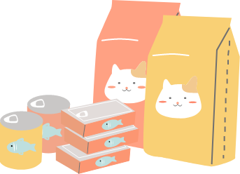
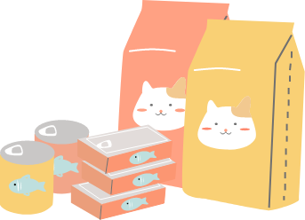

小額捐款送精美好禮
被動等待捐款已不符合協會發展業務需求，為造福更多小動物、志工以及進行各項推廣活動，協會與廠商協調溝通，以較低價格批進商品，以小額捐送贈品差價的收益做為協會公益活動基金，所有收支皆使用協會玉山帳戶，並會詳列於協會網站收支明細中以召公信。 如果您平常就需要添購這些生活用品，請您考慮參與TNR協會—好事生活網的小額捐送贈品活動，不但可滿足生活所需、贊助街貓宣導活動、還可領收據供報稅列舉時使用，一舉多得！
被動等待捐款已不符合協會發展業務需求，為造福更多小動物、志工以及進行各項推廣活動，協會與廠商協調溝通，以較低價格批進商品，以小額捐送贈品差價的收益做為協會公益活動基金，所有收支皆使用協會玉山帳戶，並會詳列於協會網站收支明細中以召公信。 如果您平常就需要添購這些生活用品，請您考慮參與TNR協會—好事生活網的小額捐送贈品活動，不但可滿足生活所需、贊助街貓宣導活動、還可領收據供報稅列舉時使用，一舉多得！
